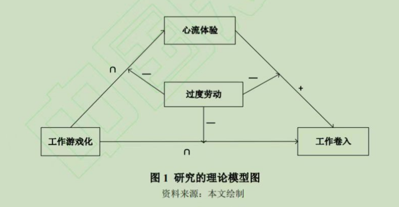

我们经常接触一般线性回归分析， 特点是自变量是是一次幂， 如这个回归方程式y = bx + c，
这种关系绘制到直角坐标系上就是一条直线， 但是很多时候， 这种关系过于理想，
实际情况是自变量和因变量之间的关系是曲线关系， 其中U型曲线是很常见的关系，
今天的教程里， 我们介绍了如何使用SPSS软件分析这种U型关系， 并且在U型回归的基础上证明中介和调节效应，
然后我们还提供了可视化方法， 使用Excel软件绘制这种U型关系，
并且在最后我们提供视频教程， 如果你愿意， 可以在下面的链接里下载我们的数据，
这个数据是真实的研究数据。
另外注意， 我们还提供了R代码和Python代码， 实现了SPSS同样的分析过程。
案例介绍
变量解释和数据介绍
心流体验（Flow Experience）的概念是上世纪70年代由心理学家Csikszentmihalyi（1975）首次提出，
Csikszentmihalyi认为心流体验描述了个体完全投入专注当下所进行的活动并自动过滤无关知觉的精神状态，
是一种最佳体验（optimal experience）——产生时间的扭曲感、忽略周围环境、集中注意力完全沉浸于当下
活动并从中获取快乐的心理状态，能激发出个体惊人的创造力。
工作卷入(Job Involvement)是一个与工作满意度高度关联的概念，测量人心理上对其工作的认同程度、工
作绩效水平对自我价值的重要程度认知。
游戏化(Gamification)旨在支持不以娱乐为目的，充分利用游戏元素和游戏
设计实现功能性和实用性需求的行为，是建立在技术进步以及我们对人类心理、动机和行为的深入研究基础
上的。
研究假设
- H1：平台基于算法的工作游戏化设计对网约配送员的工作卷入有倒 U 型影响。
- H2：平台基于算法的工作游戏化设计对网约配送员心流体验有倒 U 型影响。
- H3：心流体验对网约配送员工作卷入有正向影响。
- H4：心流体验在平台基于算法的工作游戏化设计与网约配送员工作卷入之间的倒 U 型关系中起到中介作用。
- H5：过度劳动负向调节平台基于算法的工作游戏化设计与网约配送员工作卷入之间的倒U型关系。
- H6：过度劳动负向调节心流体验与网约配送员工作卷入之间的促进关系。
- H7：过度劳动负向调节平台基于算法的工作游戏化设计与网约配送员心流体验之间的倒 U 型关系。
变量测量
自变量
工作游戏化：对工作游戏化感知的测量源自Koivisto（2015）的研究，经过问卷修订保留5个题目，
在数据中用x1-x5表示该5个题目的作答数据。
中介变量
心流体验：对心流体验的测量源自Jackson和Marsh（1999）心流体验状态量表，经过修订后共5个问题，代
表性题项如：―在工作中，我清楚地知道自己想要什么‖，―我的注意力会完全集中在正在进行的事情上‖。
在数据中， med1-med5代表5个题目的变量。
因变量
工作卷入：对工作卷入的测量采用Kanungo（1982）编制的工作卷入量表(JIQ)，经过修订后共5个问题，代
表性题项如：―我的大部分个人生活目标是以工作为导向的‖，―我大部分的兴趣和我的工作有关‖。
在数据中， y1-y5代表5个题目的变量。
调节变量
过度劳动：过度劳动中的测量采用日本厚生劳动省发布的《劳动者的疲劳积蓄度自己诊断调查表》，
包含心理感受，生理感受以及过劳成因三个维度，经过修订后共18个题目， 代表性题项如：―是否感到急躁烦闷，不
能集中精神、做事经常出错‖，―早晨起床感到精疲力竭‖，―频繁在深夜工作‖，主要反应过度劳动的程度和状态。
在数据中， 使用moda/modb/modc代表三个维度。
数据分析
中介模型
列统计模型
首先需要对中介模型进行检验， 我们首先需要列出中介模型中包含的回归模型，
通常来说， 一个因变量就代表一个回归方程式， 我们的中介模型可以写为：
$ med = c_1 + b_1 x + b_2 x^2 + e $$ y = c_2 + b_3 x + b_4 x^2 + b_5 med + e $
准备数据
因为我们拿到的数据都是原始作答数据， 所以我们首先要在excel里合成变量，
看上面的统计模型， 你需要计算的变量有： $x / med / y / x^2$ ，
我们在视频教程里会具体操作一下这个过程。
这个过程需要注意， x要做中心化， 具体细节见视频教程。
分析数据
使用spss打开数据， 分别检验第一步提出的统计模型， 重点查看$x$和$x^2$这两项的回归系数：
- 如果$b_2$显著并且为负数， 证明假设H2成立。
- 如果$b_4$显著并且为负数， 证明假设H1成立。
- 如果$b_5$显著并且为正数， 证明假设H3成立。
绘制表格
下面我列出一个论文里列出的结果， 实际上在视频教程中， 我们并不会对所有的模型进行检验，
因为都是一些重复劳动， 没必要。

调节模型
统计模型
在中介模型的基础上， 你只需要加入交互项$x^2 mod$即可：
$ med = c_1 + b_1 x + b_2 x^2 + a_1 mod + d_1 x^2 mod + e $$ y = c_2 + b_3 x + b_4 x^2 + b_5 med + a_2 mod + d_2 x^2 mod + e $
准备数据
你需要在Excel里增加$mod / x^2 mod$这两个变量， 记得对$x^2$进行中心化处理，我们在视频教程里有具体的操作过程。
分析数据
我们会使用回归分析上面两个统计模型， 重点检验$x^2 mod$的回归系数$d_1和d_2$，
如果$d_1$是正数， 并且显著， 可以证明假设H6。
如果$d_2$是正数， 并且显著， 可以证明假设H7。
绘制表格
下面我列出一个论文里列出的结果， 实际上在视频教程中， 我们并不会对所有的模型进行检验，
因为都是一些重复劳动， 没必要。
绘制调节效应图
我们绘制U型曲线有一些复杂， 使用Excel绘制是可以的， 我会分享一个工具给大家， 方便你快速绘制。
具体的操作方法在视频里介绍。
视频教程
视频总共三集，完整版视频和数据下载地址如下：点击这里下载完整视频和数据
数据下载
这是一个Excel数据， 里面的变量名是有规律的， 你看了我的视频， 应当知道：
x代表自变量， x1代表自变量的第一个题目；
y代表因变量；
med代表中介变量；
mod代表调节变量， moda/modb/modc代表调节变量的三个维度。
如果你需要使用该数据， 你可以在这里下载， 不过这不是免费下载的，
如果你下载了视频教程， 在视频教程里面会打包数据， 没必要再下载。
注意
统计咨询请加QQ 2726725926, 微信 shujufenxidaizuo, SPSS统计咨询是收费的, 不论什么模型都可以, 只限制于1个研究内.
跟我学统计可以代做分析, 每单几百元不等.
本文由jupyter notebook转换而来, 您可以在这里下载notebook
可以在微博上@mlln-cn向我免费题问
请记住我的网址: mlln.cn 或者 jupyter.cn